PASS_CH6_5_5_PERSONAL_ABILITY_RADAR_NAVIGATION_CONTEXT_V1_2_ADJUSTED_PROXY_PREVIEW
CH6.5.5 personal ability radar navigation-context v1.2 adjusted-proxy preview reuses the governed radar preview axes and replaces the route_following_stability proxy value with CH6.5.5 route-following adjusted proxy v1.2. Navigation challenge exposure is shown only as caption/annotation/review context. It is not a personal ability axis and does not create a navigation ability score. This output does not compute or authorize radar scores, ability scores, ability ranks, ability classes, THCI scores, final hiking risk scores, route suitability scores, go/no-go decisions, medical diagnoses, or causal claims.
| source_radar_audit_conclusion | source_adjusted_proxy_audit_conclusion | source_navigation_context_audit_conclusion | manifest_row_count | plot_created_count | baseline_plot_created_count | nonbaseline_plot_created_count | route_following_adjusted_proxy_applied_count | navigation_context_available_count | missing_navigation_context_count | stable_under_high_navigation_exposure_count | confirmed_route_issue_review_count | extra_source_6_1_excluded | zero_fill_used | radar_axes_reused_only | route_following_axis_uses_adjusted_proxy_v1_2 | navigation_challenge_not_added_as_axis | navigation_context_is_annotation_only | forbidden_score_rank_class_fields_present | forbidden_fields | radar_scoring_absent | ability_scoring_absent | ranking_absent | class_label_absent | navigation_ability_scoring_absent | decision_label_absent | diagnosis_absent | causal_claim_absent | admission_decision | audit_conclusion | review_reasons | interpretation_boundary |
|---|---|---|---|---|---|---|---|---|---|---|---|---|---|---|---|---|---|---|---|---|---|---|---|---|---|---|---|---|---|---|---|
| PASS_CH6_5_5_PERSONAL_ABILITY_RADAR_PLOT_V1_1_GOVERNED_LIMITED_PROXY_PREVIEW | PASS_CH6_5_5_ROUTE_FOLLOWING_ADJUSTED_PROXY_V1_2_MAINLINE_WEIGHTED_LIMITED_PROXY | PASS_CH6_5_5_ROUTE_FOLLOWING_NAVIGATION_CONTEXT_INTERPRETATION_V1_GOVERNED_CONTEXT_AVAILABLE | 25 | 25 | 25 | 0 | 25 | 25 | 0 | 11 | 2 | True | False | True | True | True | True | False | NONE | True | True | True | True | True | True | True | True | ADMIT_AS_RADAR_NAVIGATION_CONTEXT_PREVIEW_WITH_ADJUSTED_ROUTE_FOLLOWING_PROXY | PASS_CH6_5_5_PERSONAL_ABILITY_RADAR_NAVIGATION_CONTEXT_V1_2_ADJUSTED_PROXY_PREVIEW | NONE | CH6.5.5 personal ability radar navigation-context v1.2 adjusted-proxy preview reuses the governed radar preview axes and replaces the route_following_stability proxy value with CH6.5.5 route-following adjusted proxy v1.2. Navigation challenge exposure is shown only as caption/annotation/review context. It is not a personal ability axis and does not create a navigation ability score. This output does not compute or authorize radar scores, ability scores, ability ranks, ability classes, THCI scores, final hiking risk scores, route suitability scores, go/no-go decisions, medical diagnoses, or causal claims. |
| source_role | source_label | source_path | source_exists | file_size_bytes |
|---|---|---|---|---|
| plot_ready | radar plot ready table v1_1 | D:\mountain_work\115_osm\outputs\report_figures\ch6_5_5_personal_ability_radar_plot_v1_1\personal_ability_radar_plot_ready_table_v1_1.csv | True | 529751 |
| plot_index | radar plot index v1_1 | D:\mountain_work\115_osm\outputs\report_figures\ch6_5_5_personal_ability_radar_plot_v1_1\personal_ability_radar_plot_index_v1_1.csv | True | 13872 |
| plot_audit | radar plot audit v1_1 | D:\mountain_work\115_osm\outputs\report_figures\ch6_5_5_personal_ability_radar_plot_v1_1\personal_ability_radar_plot_audit_v1_1.csv | True | 1082 |
| annotation_summary | radar annotation summary v1_1 | D:\mountain_work\115_osm\outputs\report_figures\ch6_5_5_personal_ability_radar_plot_v1_1\personal_ability_radar_annotation_summary_v1_1.csv | True | 224103 |
| route_following_adjusted_proxy | route_following_adjusted_proxy | D:\mountain_work\115_osm\outputs\report_figures\ch6_5_5_route_following_adjusted_proxy_v1_2\route_following_adjusted_proxy_v1_2.csv | True | 22741 |
| route_following_adjusted_proxy_audit | route_following_adjusted_proxy_audit | D:\mountain_work\115_osm\outputs\report_figures\ch6_5_5_route_following_adjusted_proxy_v1_2\route_following_adjusted_proxy_audit_v1_2.csv | True | 1933 |
| navigation_context_interpretation | navigation_context_interpretation | D:\mountain_work\115_osm\outputs\report_figures\ch6_5_5_route_following_navigation_context_interpretation_v1\route_following_navigation_context_interpretation_v1.csv | True | 15228 |
| navigation_context_audit | navigation_context_audit | D:\mountain_work\115_osm\outputs\report_figures\ch6_5_5_route_following_navigation_context_interpretation_v1\route_following_navigation_context_audit_v1.csv | True | 1383 |
| activity_id | participant_id | plot_created | plot_path | route_following_adjusted_proxy_applied | adjusted_route_following_value | adjusted_route_following_band | navigation_context_badge | navigation_exposure_level |
|---|---|---|---|---|---|---|---|---|
| 13_1 | 13 | True | outputs\report_figures\ch6_5_5_personal_ability_radar_navigation_context_v1_2_adjusted_proxy\plots\personal_ability_radar_navigation_context_adjusted_proxy_13_1_v1_2.png | True | 88.50 | HIGH_ROUTE_FOLLOWING_ADJUSTED | STABLE_MAINLINE_FOLLOWING_UNDER_HIGH_NAVIGATION_EXPOSURE | HIGH_NAVIGATION_EXPOSURE |
| 14_1 | 14 | True | outputs\report_figures\ch6_5_5_personal_ability_radar_navigation_context_v1_2_adjusted_proxy\plots\personal_ability_radar_navigation_context_adjusted_proxy_14_1_v1_2.png | True | 82.50 | MID_ROUTE_FOLLOWING_ADJUSTED | ADJUSTED_ROUTE_FOLLOWING_CONTEXT_AVAILABLE | HIGH_NAVIGATION_EXPOSURE |
| 15_1 | 15 | True | outputs\report_figures\ch6_5_5_personal_ability_radar_navigation_context_v1_2_adjusted_proxy\plots\personal_ability_radar_navigation_context_adjusted_proxy_15_1_v1_2.png | True | 100.00 | HIGH_ROUTE_FOLLOWING_ADJUSTED | STABLE_MAINLINE_FOLLOWING_UNDER_HIGH_NAVIGATION_EXPOSURE | HIGH_NAVIGATION_EXPOSURE |
| 16_1 | 16 | True | outputs\report_figures\ch6_5_5_personal_ability_radar_navigation_context_v1_2_adjusted_proxy\plots\personal_ability_radar_navigation_context_adjusted_proxy_16_1_v1_2.png | True | 82.50 | MID_ROUTE_FOLLOWING_ADJUSTED | ADJUSTED_ROUTE_FOLLOWING_CONTEXT_AVAILABLE | HIGH_NAVIGATION_EXPOSURE |
| 20_1 | 20 | True | outputs\report_figures\ch6_5_5_personal_ability_radar_navigation_context_v1_2_adjusted_proxy\plots\personal_ability_radar_navigation_context_adjusted_proxy_20_1_v1_2.png | True | 100.00 | HIGH_ROUTE_FOLLOWING_ADJUSTED | STABLE_MAINLINE_FOLLOWING_UNDER_HIGH_NAVIGATION_EXPOSURE | HIGH_NAVIGATION_EXPOSURE |
| 23_1 | 23 | True | outputs\report_figures\ch6_5_5_personal_ability_radar_navigation_context_v1_2_adjusted_proxy\plots\personal_ability_radar_navigation_context_adjusted_proxy_23_1_v1_2.png | True | 100.00 | HIGH_ROUTE_FOLLOWING_ADJUSTED | STABLE_MAINLINE_FOLLOWING_UNDER_HIGH_NAVIGATION_EXPOSURE | HIGH_NAVIGATION_EXPOSURE |
| 28_1 | 28 | True | outputs\report_figures\ch6_5_5_personal_ability_radar_navigation_context_v1_2_adjusted_proxy\plots\personal_ability_radar_navigation_context_adjusted_proxy_28_1_v1_2.png | True | 82.50 | MID_ROUTE_FOLLOWING_ADJUSTED | ADJUSTED_ROUTE_FOLLOWING_CONTEXT_AVAILABLE | HIGH_NAVIGATION_EXPOSURE |
| 29_1 | 29 | True | outputs\report_figures\ch6_5_5_personal_ability_radar_navigation_context_v1_2_adjusted_proxy\plots\personal_ability_radar_navigation_context_adjusted_proxy_29_1_v1_2.png | True | 100.00 | HIGH_ROUTE_FOLLOWING_ADJUSTED | STABLE_MAINLINE_FOLLOWING_UNDER_HIGH_NAVIGATION_EXPOSURE | HIGH_NAVIGATION_EXPOSURE |
| 30_1 | 30 | True | outputs\report_figures\ch6_5_5_personal_ability_radar_navigation_context_v1_2_adjusted_proxy\plots\personal_ability_radar_navigation_context_adjusted_proxy_30_1_v1_2.png | True | 100.00 | HIGH_ROUTE_FOLLOWING_ADJUSTED | STABLE_MAINLINE_FOLLOWING_UNDER_HIGH_NAVIGATION_EXPOSURE | HIGH_NAVIGATION_EXPOSURE |
| 33_1 | 33 | True | outputs\report_figures\ch6_5_5_personal_ability_radar_navigation_context_v1_2_adjusted_proxy\plots\personal_ability_radar_navigation_context_adjusted_proxy_33_1_v1_2.png | True | 90.85 | HIGH_ROUTE_FOLLOWING_ADJUSTED | STABLE_MAINLINE_FOLLOWING_UNDER_HIGH_NAVIGATION_EXPOSURE | HIGH_NAVIGATION_EXPOSURE |
| 35_1 | 35 | True | outputs\report_figures\ch6_5_5_personal_ability_radar_navigation_context_v1_2_adjusted_proxy\plots\personal_ability_radar_navigation_context_adjusted_proxy_35_1_v1_2.png | True | 100.00 | HIGH_ROUTE_FOLLOWING_ADJUSTED | STABLE_MAINLINE_FOLLOWING_UNDER_HIGH_NAVIGATION_EXPOSURE | HIGH_NAVIGATION_EXPOSURE |
| 36_1 | 36 | True | outputs\report_figures\ch6_5_5_personal_ability_radar_navigation_context_v1_2_adjusted_proxy\plots\personal_ability_radar_navigation_context_adjusted_proxy_36_1_v1_2.png | True | 66.50 | LOW_ROUTE_FOLLOWING_ADJUSTED | CONFIRMED_ACTIVE_OFF_ROUTE_REJOIN_REVIEW | HIGH_NAVIGATION_EXPOSURE |
| 37_1 | 37 | True | outputs\report_figures\ch6_5_5_personal_ability_radar_navigation_context_v1_2_adjusted_proxy\plots\personal_ability_radar_navigation_context_adjusted_proxy_37_1_v1_2.png | True | 66.50 | LOW_ROUTE_FOLLOWING_ADJUSTED | CONFIRMED_ACTIVE_OFF_ROUTE_REJOIN_REVIEW | HIGH_NAVIGATION_EXPOSURE |
| 38_1 | 38 | True | outputs\report_figures\ch6_5_5_personal_ability_radar_navigation_context_v1_2_adjusted_proxy\plots\personal_ability_radar_navigation_context_adjusted_proxy_38_1_v1_2.png | True | 100.00 | HIGH_ROUTE_FOLLOWING_ADJUSTED | STABLE_MAINLINE_FOLLOWING_UNDER_HIGH_NAVIGATION_EXPOSURE | HIGH_NAVIGATION_EXPOSURE |
| 3_1 | 3 | True | outputs\report_figures\ch6_5_5_personal_ability_radar_navigation_context_v1_2_adjusted_proxy\plots\personal_ability_radar_navigation_context_adjusted_proxy_3_1_v1_2.png | True | 82.50 | MID_ROUTE_FOLLOWING_ADJUSTED | ADJUSTED_ROUTE_FOLLOWING_CONTEXT_AVAILABLE | HIGH_NAVIGATION_EXPOSURE |
| 40_1 | 40 | True | outputs\report_figures\ch6_5_5_personal_ability_radar_navigation_context_v1_2_adjusted_proxy\plots\personal_ability_radar_navigation_context_adjusted_proxy_40_1_v1_2.png | True | 82.50 | MID_ROUTE_FOLLOWING_ADJUSTED | ADJUSTED_ROUTE_FOLLOWING_CONTEXT_AVAILABLE | HIGH_NAVIGATION_EXPOSURE |
| 41_1 | 41 | True | outputs\report_figures\ch6_5_5_personal_ability_radar_navigation_context_v1_2_adjusted_proxy\plots\personal_ability_radar_navigation_context_adjusted_proxy_41_1_v1_2.png | True | 92.05 | HIGH_ROUTE_FOLLOWING_ADJUSTED | STABLE_MAINLINE_FOLLOWING_UNDER_HIGH_NAVIGATION_EXPOSURE | HIGH_NAVIGATION_EXPOSURE |
| 42_1 | 42 | True | outputs\report_figures\ch6_5_5_personal_ability_radar_navigation_context_v1_2_adjusted_proxy\plots\personal_ability_radar_navigation_context_adjusted_proxy_42_1_v1_2.png | True | 82.50 | MID_ROUTE_FOLLOWING_ADJUSTED | ADJUSTED_ROUTE_FOLLOWING_CONTEXT_AVAILABLE | HIGH_NAVIGATION_EXPOSURE |
| 43_1 | 43 | True | outputs\report_figures\ch6_5_5_personal_ability_radar_navigation_context_v1_2_adjusted_proxy\plots\personal_ability_radar_navigation_context_adjusted_proxy_43_1_v1_2.png | True | 82.50 | MID_ROUTE_FOLLOWING_ADJUSTED | ADJUSTED_ROUTE_FOLLOWING_CONTEXT_AVAILABLE | HIGH_NAVIGATION_EXPOSURE |
| 44_1 | 44 | True | outputs\report_figures\ch6_5_5_personal_ability_radar_navigation_context_v1_2_adjusted_proxy\plots\personal_ability_radar_navigation_context_adjusted_proxy_44_1_v1_2.png | True | 82.50 | MID_ROUTE_FOLLOWING_ADJUSTED | ADJUSTED_ROUTE_FOLLOWING_CONTEXT_AVAILABLE | HIGH_NAVIGATION_EXPOSURE |
| 45_1 | 45 | True | outputs\report_figures\ch6_5_5_personal_ability_radar_navigation_context_v1_2_adjusted_proxy\plots\personal_ability_radar_navigation_context_adjusted_proxy_45_1_v1_2.png | True | 91.85 | HIGH_ROUTE_FOLLOWING_ADJUSTED | STABLE_MAINLINE_FOLLOWING_UNDER_HIGH_NAVIGATION_EXPOSURE | HIGH_NAVIGATION_EXPOSURE |
| 46_1 | 46 | True | outputs\report_figures\ch6_5_5_personal_ability_radar_navigation_context_v1_2_adjusted_proxy\plots\personal_ability_radar_navigation_context_adjusted_proxy_46_1_v1_2.png | True | 82.50 | MID_ROUTE_FOLLOWING_ADJUSTED | ADJUSTED_ROUTE_FOLLOWING_CONTEXT_AVAILABLE | HIGH_NAVIGATION_EXPOSURE |
| 48_1 | 48 | True | outputs\report_figures\ch6_5_5_personal_ability_radar_navigation_context_v1_2_adjusted_proxy\plots\personal_ability_radar_navigation_context_adjusted_proxy_48_1_v1_2.png | True | 82.50 | MID_ROUTE_FOLLOWING_ADJUSTED | ADJUSTED_ROUTE_FOLLOWING_CONTEXT_AVAILABLE | HIGH_NAVIGATION_EXPOSURE |
| 8_1 | 8 | True | outputs\report_figures\ch6_5_5_personal_ability_radar_navigation_context_v1_2_adjusted_proxy\plots\personal_ability_radar_navigation_context_adjusted_proxy_8_1_v1_2.png | True | 82.50 | MID_ROUTE_FOLLOWING_ADJUSTED | ADJUSTED_ROUTE_FOLLOWING_CONTEXT_AVAILABLE | HIGH_NAVIGATION_EXPOSURE |
| 9_1 | 9 | True | outputs\report_figures\ch6_5_5_personal_ability_radar_navigation_context_v1_2_adjusted_proxy\plots\personal_ability_radar_navigation_context_adjusted_proxy_9_1_v1_2.png | True | 82.50 | MID_ROUTE_FOLLOWING_ADJUSTED | ADJUSTED_ROUTE_FOLLOWING_CONTEXT_AVAILABLE | HIGH_NAVIGATION_EXPOSURE |
STABLE_MAINLINE_FOLLOWING_UNDER_HIGH_NAVIGATION_EXPOSURE
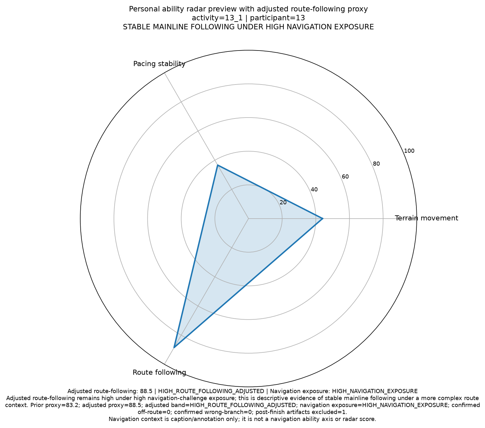
Adjusted route-following remains high under high navigation-challenge exposure; this is descriptive evidence of stable mainline following under a more complex route context. Prior proxy=83.2; adjusted proxy=88.5; adjusted band=HIGH_ROUTE_FOLLOWING_ADJUSTED; navigation exposure=HIGH_NAVIGATION_EXPOSURE; confirmed off-route=0; confirmed wrong-branch=0; post-finish artifacts excluded=1.
ADJUSTED_ROUTE_FOLLOWING_CONTEXT_AVAILABLE
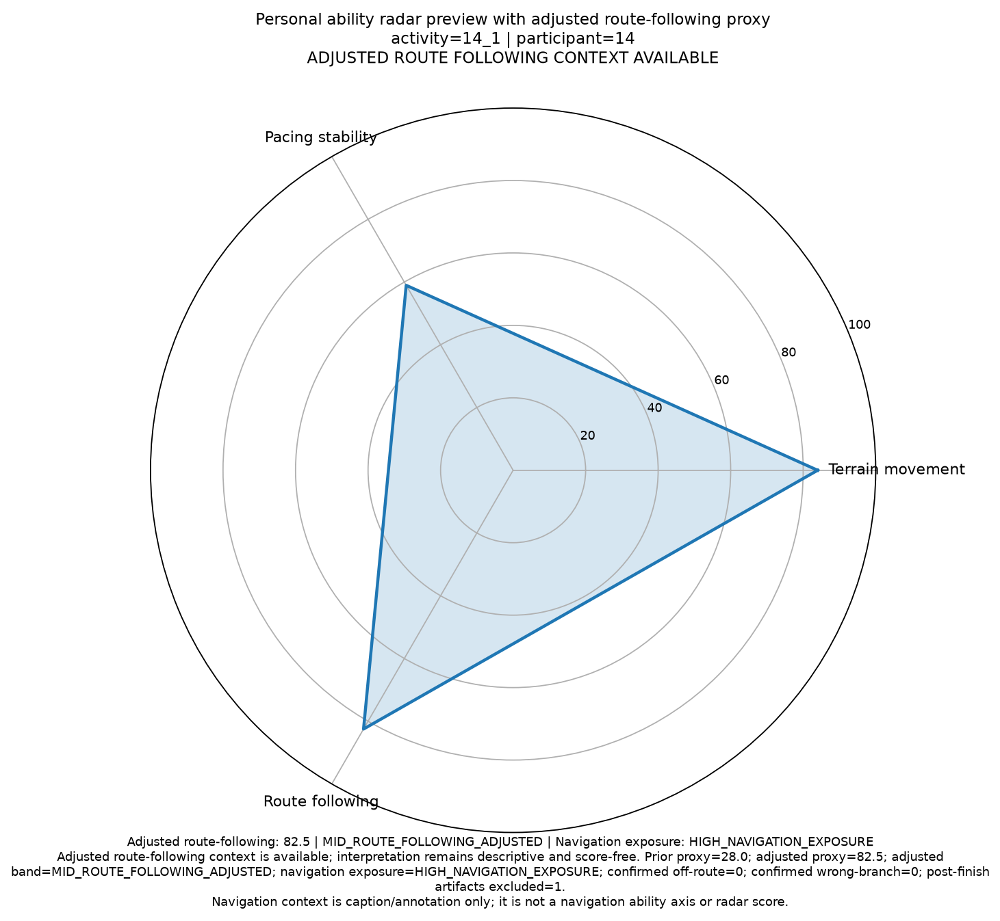
Adjusted route-following context is available; interpretation remains descriptive and score-free. Prior proxy=28.0; adjusted proxy=82.5; adjusted band=MID_ROUTE_FOLLOWING_ADJUSTED; navigation exposure=HIGH_NAVIGATION_EXPOSURE; confirmed off-route=0; confirmed wrong-branch=0; post-finish artifacts excluded=1.
STABLE_MAINLINE_FOLLOWING_UNDER_HIGH_NAVIGATION_EXPOSURE
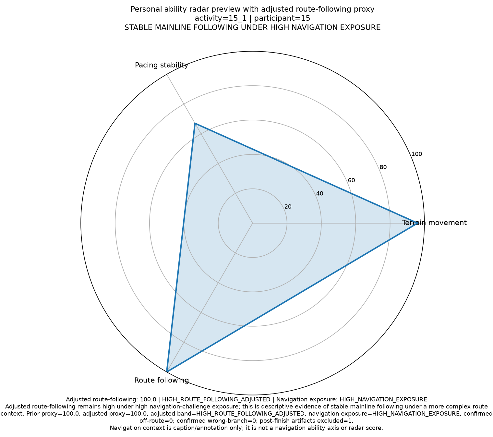
Adjusted route-following remains high under high navigation-challenge exposure; this is descriptive evidence of stable mainline following under a more complex route context. Prior proxy=100.0; adjusted proxy=100.0; adjusted band=HIGH_ROUTE_FOLLOWING_ADJUSTED; navigation exposure=HIGH_NAVIGATION_EXPOSURE; confirmed off-route=0; confirmed wrong-branch=0; post-finish artifacts excluded=1.
ADJUSTED_ROUTE_FOLLOWING_CONTEXT_AVAILABLE
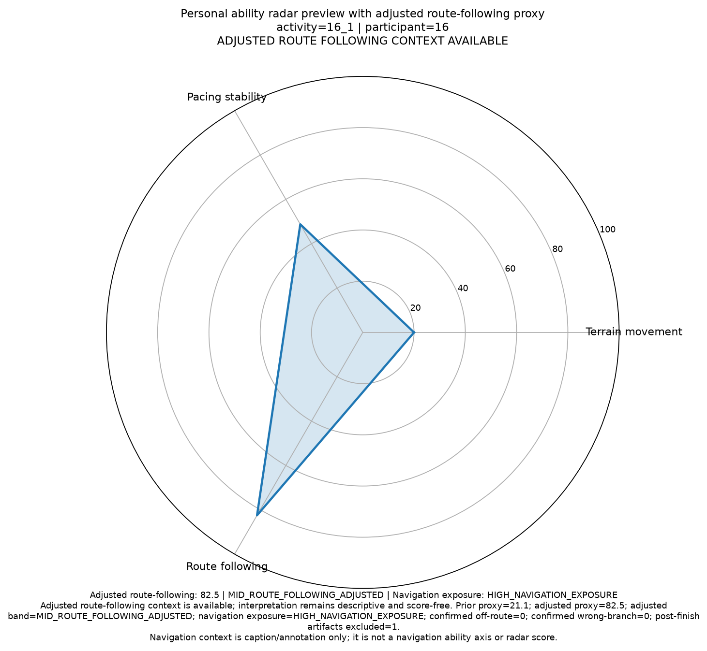
Adjusted route-following context is available; interpretation remains descriptive and score-free. Prior proxy=21.1; adjusted proxy=82.5; adjusted band=MID_ROUTE_FOLLOWING_ADJUSTED; navigation exposure=HIGH_NAVIGATION_EXPOSURE; confirmed off-route=0; confirmed wrong-branch=0; post-finish artifacts excluded=1.
STABLE_MAINLINE_FOLLOWING_UNDER_HIGH_NAVIGATION_EXPOSURE
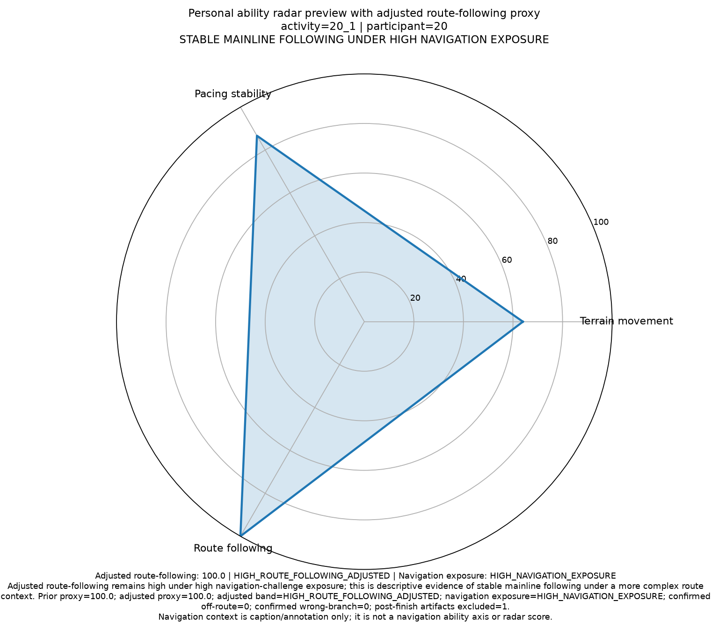
Adjusted route-following remains high under high navigation-challenge exposure; this is descriptive evidence of stable mainline following under a more complex route context. Prior proxy=100.0; adjusted proxy=100.0; adjusted band=HIGH_ROUTE_FOLLOWING_ADJUSTED; navigation exposure=HIGH_NAVIGATION_EXPOSURE; confirmed off-route=0; confirmed wrong-branch=0; post-finish artifacts excluded=1.
STABLE_MAINLINE_FOLLOWING_UNDER_HIGH_NAVIGATION_EXPOSURE
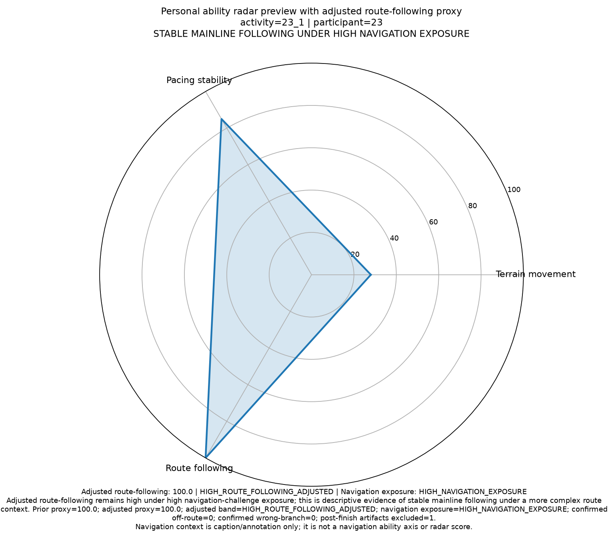
Adjusted route-following remains high under high navigation-challenge exposure; this is descriptive evidence of stable mainline following under a more complex route context. Prior proxy=100.0; adjusted proxy=100.0; adjusted band=HIGH_ROUTE_FOLLOWING_ADJUSTED; navigation exposure=HIGH_NAVIGATION_EXPOSURE; confirmed off-route=0; confirmed wrong-branch=0; post-finish artifacts excluded=1.
ADJUSTED_ROUTE_FOLLOWING_CONTEXT_AVAILABLE
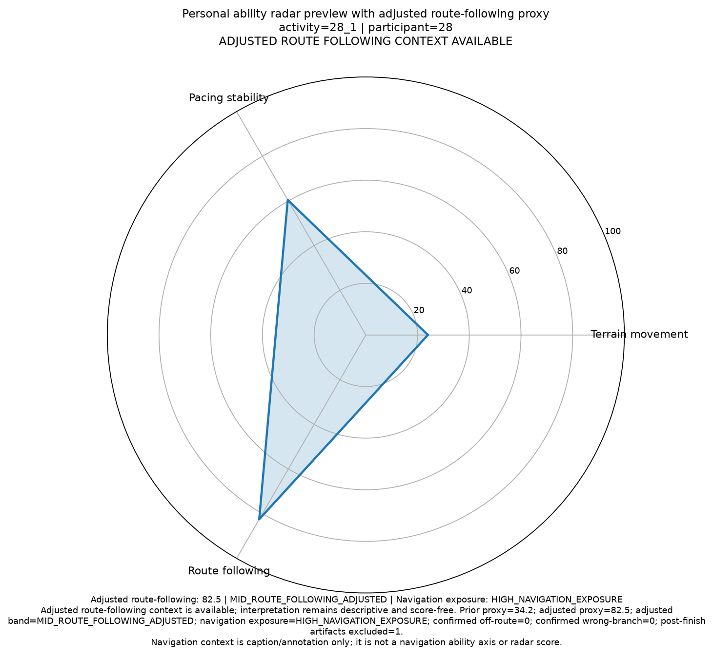
Adjusted route-following context is available; interpretation remains descriptive and score-free. Prior proxy=34.2; adjusted proxy=82.5; adjusted band=MID_ROUTE_FOLLOWING_ADJUSTED; navigation exposure=HIGH_NAVIGATION_EXPOSURE; confirmed off-route=0; confirmed wrong-branch=0; post-finish artifacts excluded=1.
STABLE_MAINLINE_FOLLOWING_UNDER_HIGH_NAVIGATION_EXPOSURE
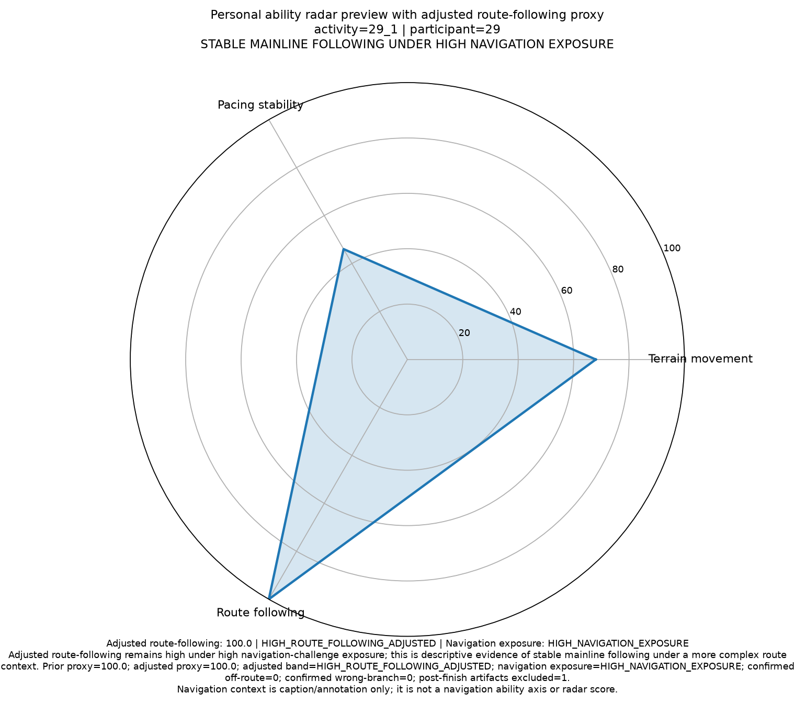
Adjusted route-following remains high under high navigation-challenge exposure; this is descriptive evidence of stable mainline following under a more complex route context. Prior proxy=100.0; adjusted proxy=100.0; adjusted band=HIGH_ROUTE_FOLLOWING_ADJUSTED; navigation exposure=HIGH_NAVIGATION_EXPOSURE; confirmed off-route=0; confirmed wrong-branch=0; post-finish artifacts excluded=1.
STABLE_MAINLINE_FOLLOWING_UNDER_HIGH_NAVIGATION_EXPOSURE
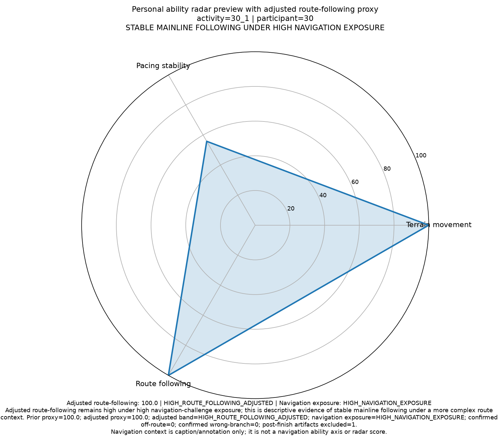
Adjusted route-following remains high under high navigation-challenge exposure; this is descriptive evidence of stable mainline following under a more complex route context. Prior proxy=100.0; adjusted proxy=100.0; adjusted band=HIGH_ROUTE_FOLLOWING_ADJUSTED; navigation exposure=HIGH_NAVIGATION_EXPOSURE; confirmed off-route=0; confirmed wrong-branch=0; post-finish artifacts excluded=1.
STABLE_MAINLINE_FOLLOWING_UNDER_HIGH_NAVIGATION_EXPOSURE
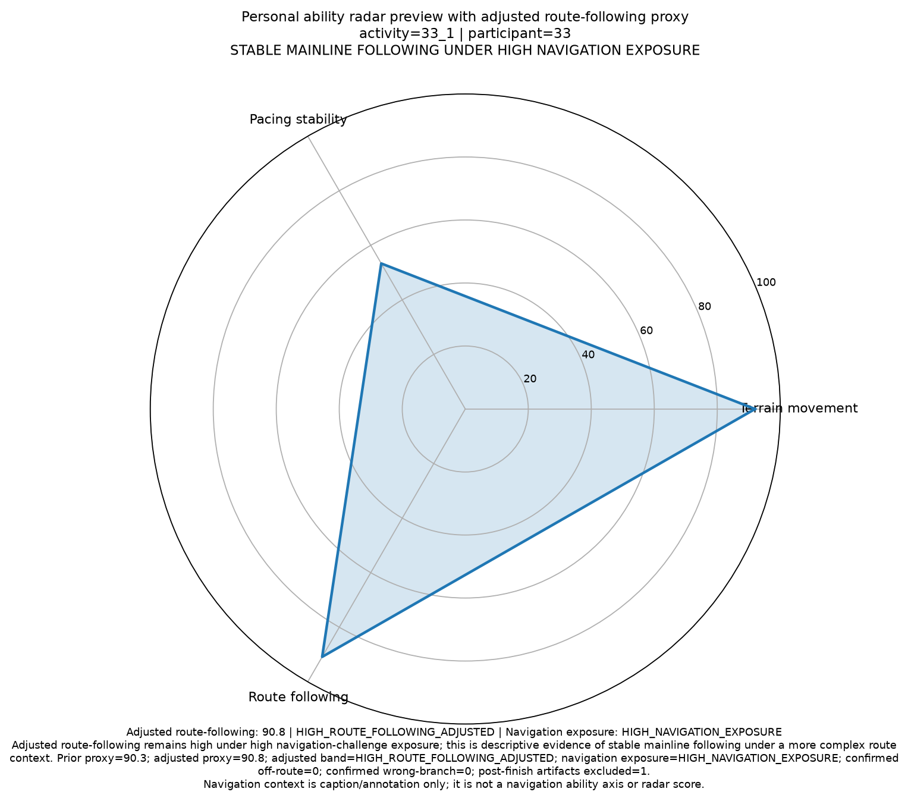
Adjusted route-following remains high under high navigation-challenge exposure; this is descriptive evidence of stable mainline following under a more complex route context. Prior proxy=90.3; adjusted proxy=90.8; adjusted band=HIGH_ROUTE_FOLLOWING_ADJUSTED; navigation exposure=HIGH_NAVIGATION_EXPOSURE; confirmed off-route=0; confirmed wrong-branch=0; post-finish artifacts excluded=1.
STABLE_MAINLINE_FOLLOWING_UNDER_HIGH_NAVIGATION_EXPOSURE
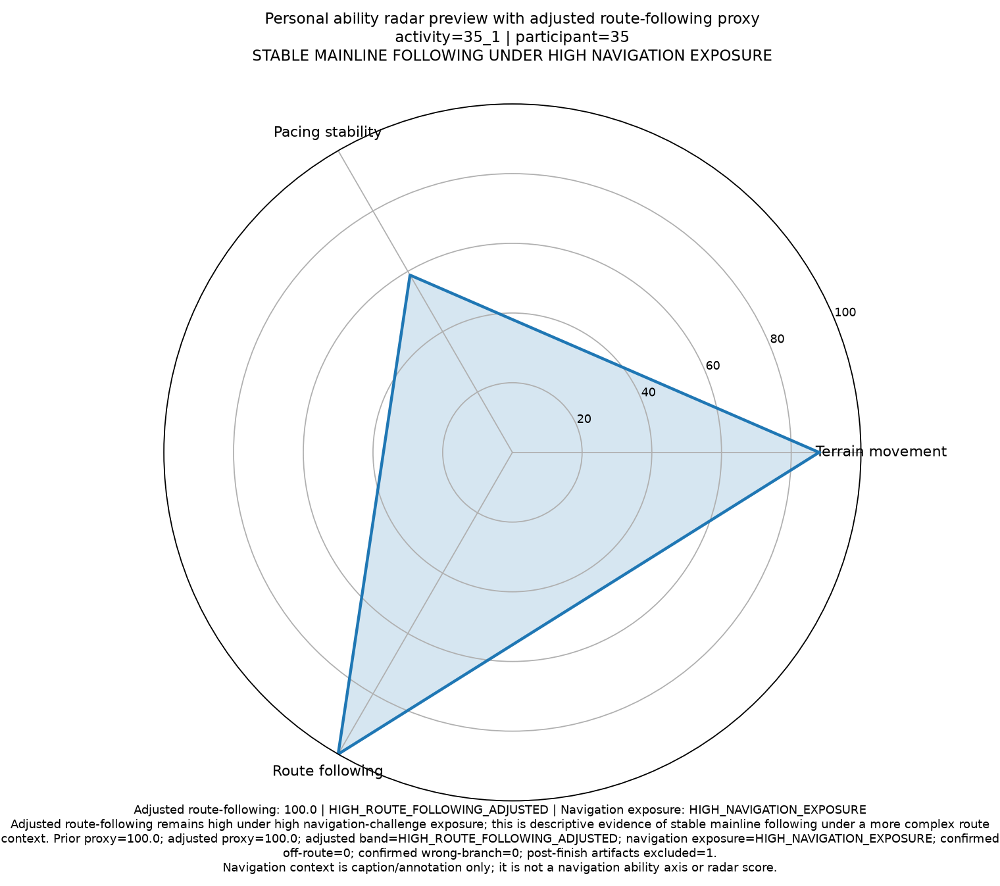
Adjusted route-following remains high under high navigation-challenge exposure; this is descriptive evidence of stable mainline following under a more complex route context. Prior proxy=100.0; adjusted proxy=100.0; adjusted band=HIGH_ROUTE_FOLLOWING_ADJUSTED; navigation exposure=HIGH_NAVIGATION_EXPOSURE; confirmed off-route=0; confirmed wrong-branch=0; post-finish artifacts excluded=1.
CONFIRMED_ACTIVE_OFF_ROUTE_REJOIN_REVIEW
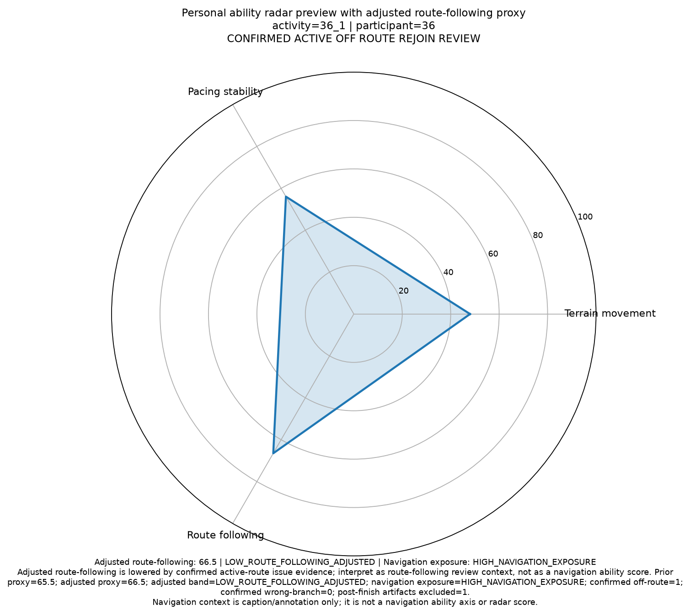
Adjusted route-following is lowered by confirmed active-route issue evidence; interpret as route-following review context, not as a navigation ability score. Prior proxy=65.5; adjusted proxy=66.5; adjusted band=LOW_ROUTE_FOLLOWING_ADJUSTED; navigation exposure=HIGH_NAVIGATION_EXPOSURE; confirmed off-route=1; confirmed wrong-branch=0; post-finish artifacts excluded=1.
CONFIRMED_ACTIVE_OFF_ROUTE_REJOIN_REVIEW
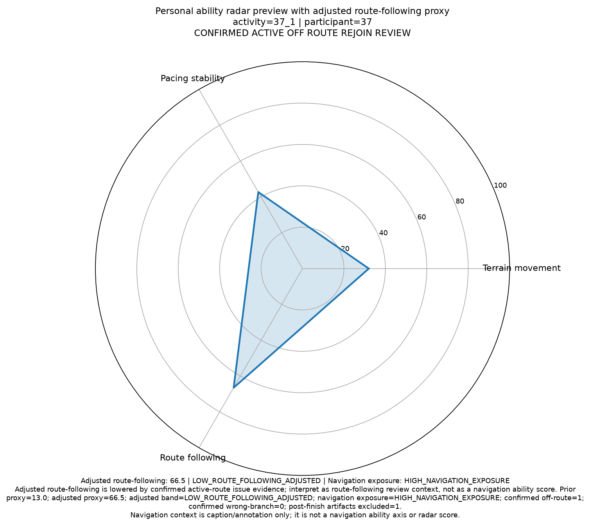
Adjusted route-following is lowered by confirmed active-route issue evidence; interpret as route-following review context, not as a navigation ability score. Prior proxy=13.0; adjusted proxy=66.5; adjusted band=LOW_ROUTE_FOLLOWING_ADJUSTED; navigation exposure=HIGH_NAVIGATION_EXPOSURE; confirmed off-route=1; confirmed wrong-branch=0; post-finish artifacts excluded=1.
STABLE_MAINLINE_FOLLOWING_UNDER_HIGH_NAVIGATION_EXPOSURE
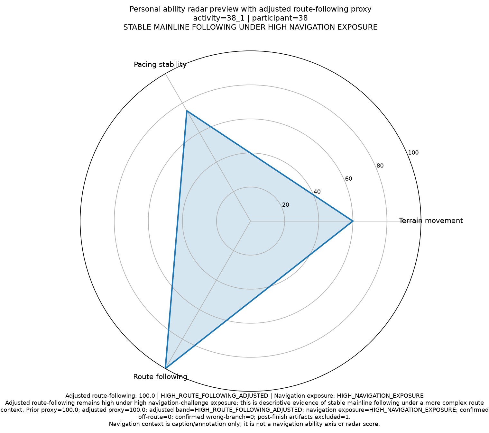
Adjusted route-following remains high under high navigation-challenge exposure; this is descriptive evidence of stable mainline following under a more complex route context. Prior proxy=100.0; adjusted proxy=100.0; adjusted band=HIGH_ROUTE_FOLLOWING_ADJUSTED; navigation exposure=HIGH_NAVIGATION_EXPOSURE; confirmed off-route=0; confirmed wrong-branch=0; post-finish artifacts excluded=1.
ADJUSTED_ROUTE_FOLLOWING_CONTEXT_AVAILABLE
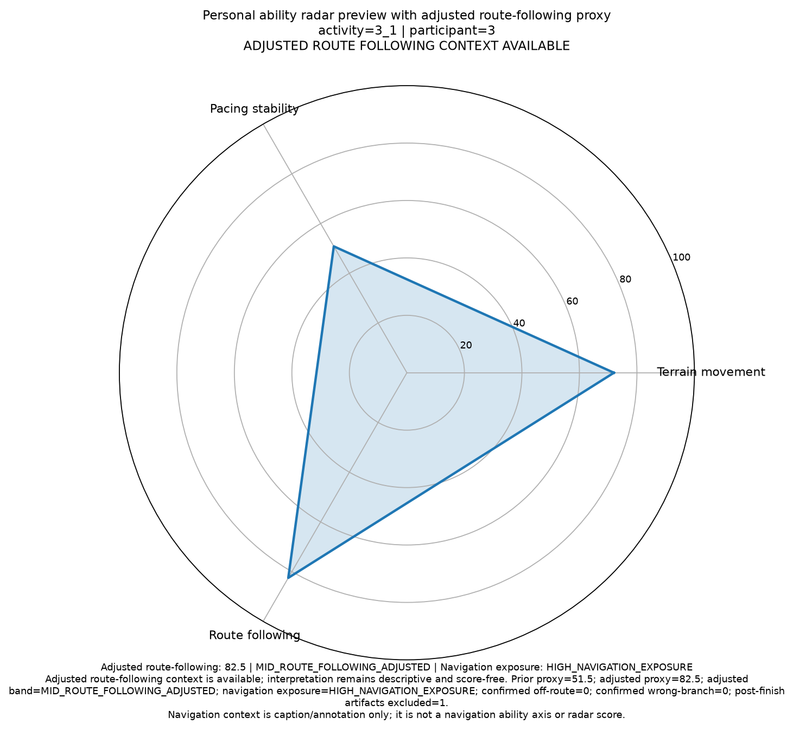
Adjusted route-following context is available; interpretation remains descriptive and score-free. Prior proxy=51.5; adjusted proxy=82.5; adjusted band=MID_ROUTE_FOLLOWING_ADJUSTED; navigation exposure=HIGH_NAVIGATION_EXPOSURE; confirmed off-route=0; confirmed wrong-branch=0; post-finish artifacts excluded=1.
ADJUSTED_ROUTE_FOLLOWING_CONTEXT_AVAILABLE
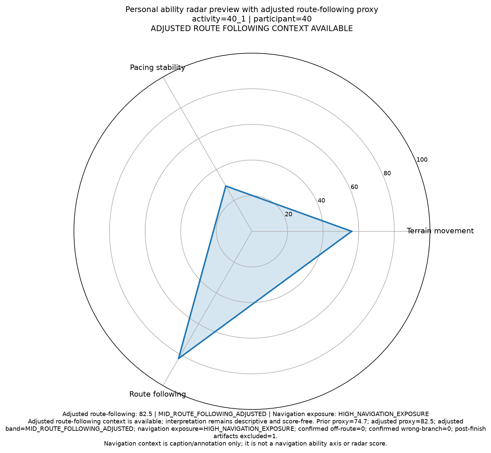
Adjusted route-following context is available; interpretation remains descriptive and score-free. Prior proxy=74.7; adjusted proxy=82.5; adjusted band=MID_ROUTE_FOLLOWING_ADJUSTED; navigation exposure=HIGH_NAVIGATION_EXPOSURE; confirmed off-route=0; confirmed wrong-branch=0; post-finish artifacts excluded=1.
STABLE_MAINLINE_FOLLOWING_UNDER_HIGH_NAVIGATION_EXPOSURE
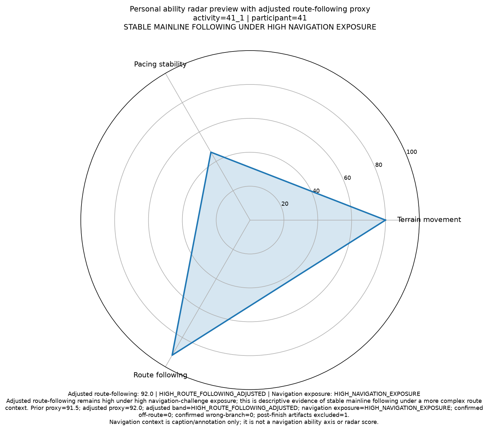
Adjusted route-following remains high under high navigation-challenge exposure; this is descriptive evidence of stable mainline following under a more complex route context. Prior proxy=91.5; adjusted proxy=92.0; adjusted band=HIGH_ROUTE_FOLLOWING_ADJUSTED; navigation exposure=HIGH_NAVIGATION_EXPOSURE; confirmed off-route=0; confirmed wrong-branch=0; post-finish artifacts excluded=1.
ADJUSTED_ROUTE_FOLLOWING_CONTEXT_AVAILABLE
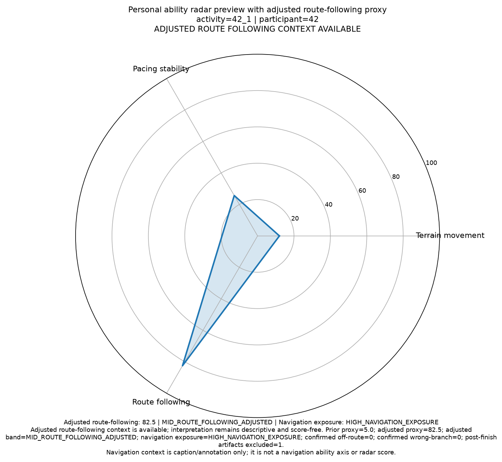
Adjusted route-following context is available; interpretation remains descriptive and score-free. Prior proxy=5.0; adjusted proxy=82.5; adjusted band=MID_ROUTE_FOLLOWING_ADJUSTED; navigation exposure=HIGH_NAVIGATION_EXPOSURE; confirmed off-route=0; confirmed wrong-branch=0; post-finish artifacts excluded=1.
ADJUSTED_ROUTE_FOLLOWING_CONTEXT_AVAILABLE
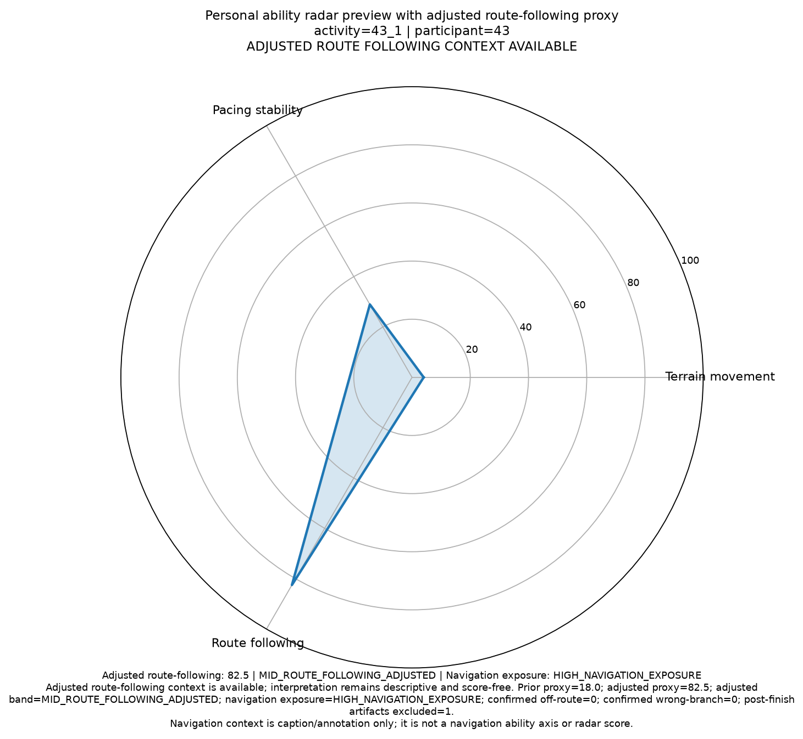
Adjusted route-following context is available; interpretation remains descriptive and score-free. Prior proxy=18.0; adjusted proxy=82.5; adjusted band=MID_ROUTE_FOLLOWING_ADJUSTED; navigation exposure=HIGH_NAVIGATION_EXPOSURE; confirmed off-route=0; confirmed wrong-branch=0; post-finish artifacts excluded=1.
ADJUSTED_ROUTE_FOLLOWING_CONTEXT_AVAILABLE
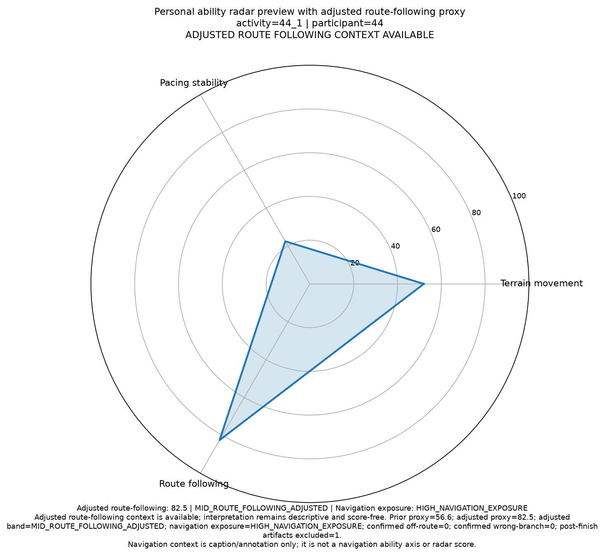
Adjusted route-following context is available; interpretation remains descriptive and score-free. Prior proxy=56.6; adjusted proxy=82.5; adjusted band=MID_ROUTE_FOLLOWING_ADJUSTED; navigation exposure=HIGH_NAVIGATION_EXPOSURE; confirmed off-route=0; confirmed wrong-branch=0; post-finish artifacts excluded=1.
STABLE_MAINLINE_FOLLOWING_UNDER_HIGH_NAVIGATION_EXPOSURE
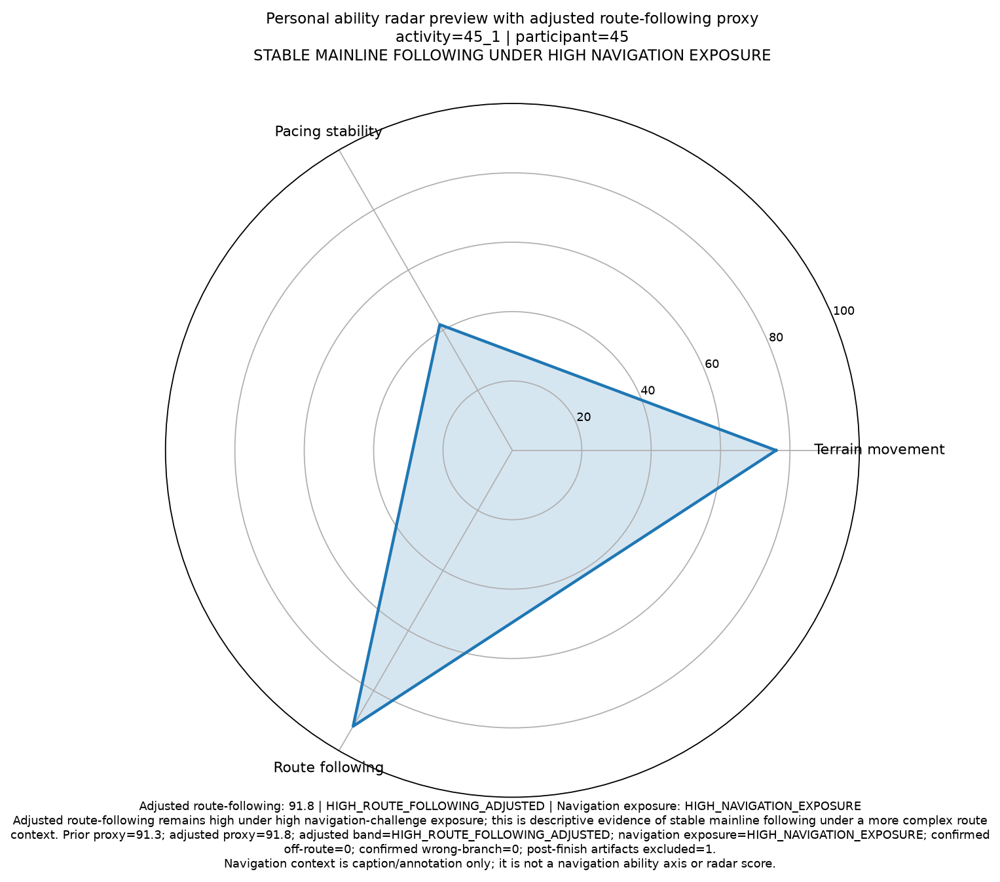
Adjusted route-following remains high under high navigation-challenge exposure; this is descriptive evidence of stable mainline following under a more complex route context. Prior proxy=91.3; adjusted proxy=91.8; adjusted band=HIGH_ROUTE_FOLLOWING_ADJUSTED; navigation exposure=HIGH_NAVIGATION_EXPOSURE; confirmed off-route=0; confirmed wrong-branch=0; post-finish artifacts excluded=1.
ADJUSTED_ROUTE_FOLLOWING_CONTEXT_AVAILABLE
Adjusted route-following context is available; interpretation remains descriptive and score-free. Prior proxy=13.9; adjusted proxy=82.5; adjusted band=MID_ROUTE_FOLLOWING_ADJUSTED; navigation exposure=HIGH_NAVIGATION_EXPOSURE; confirmed off-route=0; confirmed wrong-branch=0; post-finish artifacts excluded=1.
ADJUSTED_ROUTE_FOLLOWING_CONTEXT_AVAILABLE
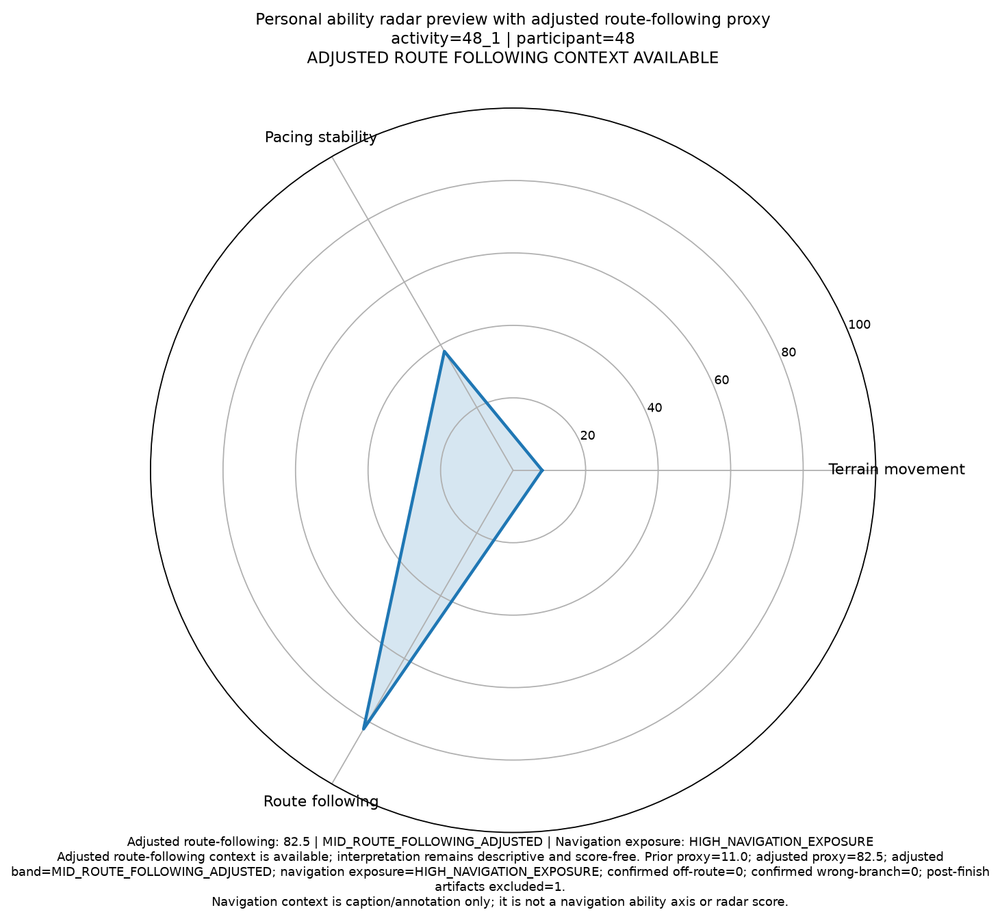
Adjusted route-following context is available; interpretation remains descriptive and score-free. Prior proxy=11.0; adjusted proxy=82.5; adjusted band=MID_ROUTE_FOLLOWING_ADJUSTED; navigation exposure=HIGH_NAVIGATION_EXPOSURE; confirmed off-route=0; confirmed wrong-branch=0; post-finish artifacts excluded=1.
ADJUSTED_ROUTE_FOLLOWING_CONTEXT_AVAILABLE
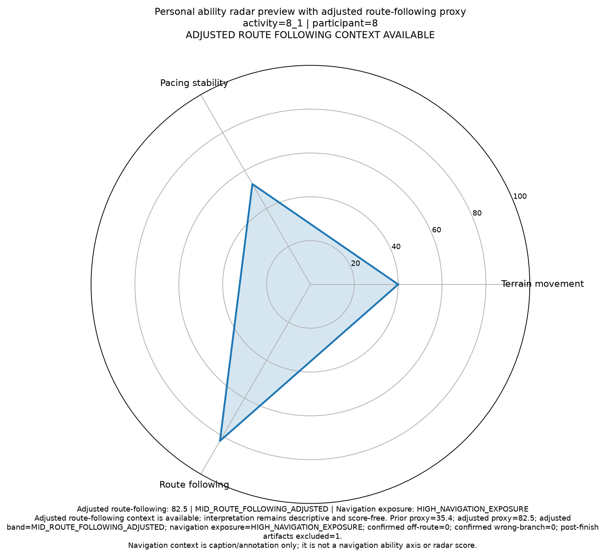
Adjusted route-following context is available; interpretation remains descriptive and score-free. Prior proxy=35.4; adjusted proxy=82.5; adjusted band=MID_ROUTE_FOLLOWING_ADJUSTED; navigation exposure=HIGH_NAVIGATION_EXPOSURE; confirmed off-route=0; confirmed wrong-branch=0; post-finish artifacts excluded=1.
ADJUSTED_ROUTE_FOLLOWING_CONTEXT_AVAILABLE
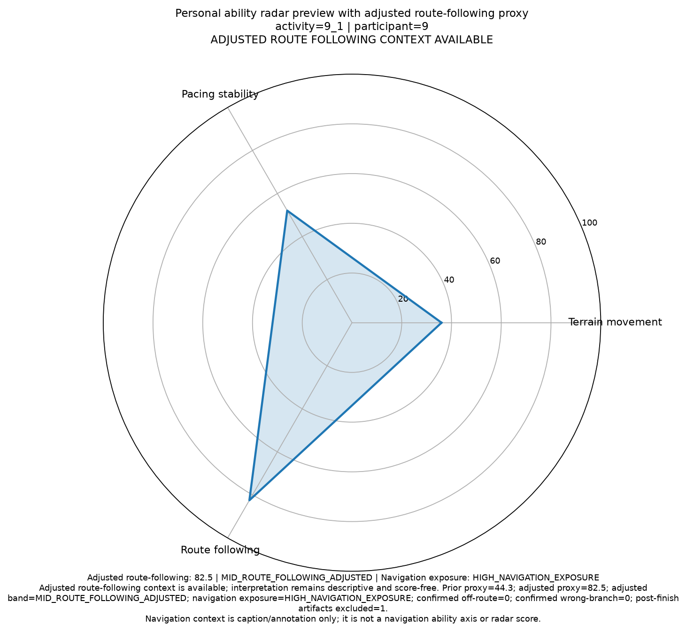
Adjusted route-following context is available; interpretation remains descriptive and score-free. Prior proxy=44.3; adjusted proxy=82.5; adjusted band=MID_ROUTE_FOLLOWING_ADJUSTED; navigation exposure=HIGH_NAVIGATION_EXPOSURE; confirmed off-route=0; confirmed wrong-branch=0; post-finish artifacts excluded=1.
| activity_id | participant_id | prior_route_following_proxy_value | route_following_adjusted_proxy_value | route_following_adjusted_band | navigation_context_badge | navigation_exposure_level | wrong_branch_evidence_count | off_route_evidence_count | post_finish_evidence_count | adjustment_reason | route_following_adjusted_interpretation_label | navigation_context_caption |
|---|---|---|---|---|---|---|---|---|---|---|---|---|
| 13_1 | 13 | 83.17 | 88.50 | HIGH_ROUTE_FOLLOWING_ADJUSTED | STABLE_MAINLINE_FOLLOWING_UNDER_HIGH_NAVIGATION_EXPOSURE | HIGH_NAVIGATION_EXPOSURE | 0.0 | 0.0 | 1.0 | MAINLINE_ADHERENCE_REWEIGHTED_UPWARD | STABLE_MAINLINE_FOLLOWING_UNDER_HIGH_NAVIGATION_EXPOSURE_DESCRIPTIVE_EVIDENCE | Adjusted route-following remains high under high navigation-challenge exposure; this is descriptive evidence of stable mainline following under a more complex route context. Prior proxy=83.2; adjusted proxy=88.5; adjusted band=HIGH_ROUTE_FOLLOWING_ADJUSTED; navigation exposure=HIGH_NAVIGATION_EXPOSURE; confirmed off-route=0; confirmed wrong-branch=0; post-finish artifacts excluded=1. |
| 14_1 | 14 | 28.00 | 82.50 | MID_ROUTE_FOLLOWING_ADJUSTED | ADJUSTED_ROUTE_FOLLOWING_CONTEXT_AVAILABLE | HIGH_NAVIGATION_EXPOSURE | 0.0 | 0.0 | 1.0 | MAINLINE_ADHERENCE_REWEIGHTED_UPWARD | ROUTE_FOLLOWING_ADJUSTED_CONTEXT_AVAILABLE_NO_SCORE | Adjusted route-following context is available; interpretation remains descriptive and score-free. Prior proxy=28.0; adjusted proxy=82.5; adjusted band=MID_ROUTE_FOLLOWING_ADJUSTED; navigation exposure=HIGH_NAVIGATION_EXPOSURE; confirmed off-route=0; confirmed wrong-branch=0; post-finish artifacts excluded=1. |
| 15_1 | 15 | 100.00 | 100.00 | HIGH_ROUTE_FOLLOWING_ADJUSTED | STABLE_MAINLINE_FOLLOWING_UNDER_HIGH_NAVIGATION_EXPOSURE | HIGH_NAVIGATION_EXPOSURE | 0.0 | 0.0 | 1.0 | PRIOR_PROXY_RETAINED | STABLE_MAINLINE_FOLLOWING_UNDER_HIGH_NAVIGATION_EXPOSURE_DESCRIPTIVE_EVIDENCE | Adjusted route-following remains high under high navigation-challenge exposure; this is descriptive evidence of stable mainline following under a more complex route context. Prior proxy=100.0; adjusted proxy=100.0; adjusted band=HIGH_ROUTE_FOLLOWING_ADJUSTED; navigation exposure=HIGH_NAVIGATION_EXPOSURE; confirmed off-route=0; confirmed wrong-branch=0; post-finish artifacts excluded=1. |
| 16_1 | 16 | 21.10 | 82.50 | MID_ROUTE_FOLLOWING_ADJUSTED | ADJUSTED_ROUTE_FOLLOWING_CONTEXT_AVAILABLE | HIGH_NAVIGATION_EXPOSURE | 0.0 | 0.0 | 1.0 | MAINLINE_ADHERENCE_REWEIGHTED_UPWARD | ROUTE_FOLLOWING_ADJUSTED_CONTEXT_AVAILABLE_NO_SCORE | Adjusted route-following context is available; interpretation remains descriptive and score-free. Prior proxy=21.1; adjusted proxy=82.5; adjusted band=MID_ROUTE_FOLLOWING_ADJUSTED; navigation exposure=HIGH_NAVIGATION_EXPOSURE; confirmed off-route=0; confirmed wrong-branch=0; post-finish artifacts excluded=1. |
| 20_1 | 20 | 100.00 | 100.00 | HIGH_ROUTE_FOLLOWING_ADJUSTED | STABLE_MAINLINE_FOLLOWING_UNDER_HIGH_NAVIGATION_EXPOSURE | HIGH_NAVIGATION_EXPOSURE | 0.0 | 0.0 | 1.0 | PRIOR_PROXY_RETAINED | STABLE_MAINLINE_FOLLOWING_UNDER_HIGH_NAVIGATION_EXPOSURE_DESCRIPTIVE_EVIDENCE | Adjusted route-following remains high under high navigation-challenge exposure; this is descriptive evidence of stable mainline following under a more complex route context. Prior proxy=100.0; adjusted proxy=100.0; adjusted band=HIGH_ROUTE_FOLLOWING_ADJUSTED; navigation exposure=HIGH_NAVIGATION_EXPOSURE; confirmed off-route=0; confirmed wrong-branch=0; post-finish artifacts excluded=1. |
| 23_1 | 23 | 100.00 | 100.00 | HIGH_ROUTE_FOLLOWING_ADJUSTED | STABLE_MAINLINE_FOLLOWING_UNDER_HIGH_NAVIGATION_EXPOSURE | HIGH_NAVIGATION_EXPOSURE | 0.0 | 0.0 | 1.0 | PRIOR_PROXY_RETAINED | STABLE_MAINLINE_FOLLOWING_UNDER_HIGH_NAVIGATION_EXPOSURE_DESCRIPTIVE_EVIDENCE | Adjusted route-following remains high under high navigation-challenge exposure; this is descriptive evidence of stable mainline following under a more complex route context. Prior proxy=100.0; adjusted proxy=100.0; adjusted band=HIGH_ROUTE_FOLLOWING_ADJUSTED; navigation exposure=HIGH_NAVIGATION_EXPOSURE; confirmed off-route=0; confirmed wrong-branch=0; post-finish artifacts excluded=1. |
| 28_1 | 28 | 34.20 | 82.50 | MID_ROUTE_FOLLOWING_ADJUSTED | ADJUSTED_ROUTE_FOLLOWING_CONTEXT_AVAILABLE | HIGH_NAVIGATION_EXPOSURE | 0.0 | 0.0 | 1.0 | MAINLINE_ADHERENCE_REWEIGHTED_UPWARD | ROUTE_FOLLOWING_ADJUSTED_CONTEXT_AVAILABLE_NO_SCORE | Adjusted route-following context is available; interpretation remains descriptive and score-free. Prior proxy=34.2; adjusted proxy=82.5; adjusted band=MID_ROUTE_FOLLOWING_ADJUSTED; navigation exposure=HIGH_NAVIGATION_EXPOSURE; confirmed off-route=0; confirmed wrong-branch=0; post-finish artifacts excluded=1. |
| 29_1 | 29 | 100.00 | 100.00 | HIGH_ROUTE_FOLLOWING_ADJUSTED | STABLE_MAINLINE_FOLLOWING_UNDER_HIGH_NAVIGATION_EXPOSURE | HIGH_NAVIGATION_EXPOSURE | 0.0 | 0.0 | 1.0 | PRIOR_PROXY_RETAINED | STABLE_MAINLINE_FOLLOWING_UNDER_HIGH_NAVIGATION_EXPOSURE_DESCRIPTIVE_EVIDENCE | Adjusted route-following remains high under high navigation-challenge exposure; this is descriptive evidence of stable mainline following under a more complex route context. Prior proxy=100.0; adjusted proxy=100.0; adjusted band=HIGH_ROUTE_FOLLOWING_ADJUSTED; navigation exposure=HIGH_NAVIGATION_EXPOSURE; confirmed off-route=0; confirmed wrong-branch=0; post-finish artifacts excluded=1. |
| 30_1 | 30 | 100.00 | 100.00 | HIGH_ROUTE_FOLLOWING_ADJUSTED | STABLE_MAINLINE_FOLLOWING_UNDER_HIGH_NAVIGATION_EXPOSURE | HIGH_NAVIGATION_EXPOSURE | 0.0 | 0.0 | 1.0 | PRIOR_PROXY_RETAINED | STABLE_MAINLINE_FOLLOWING_UNDER_HIGH_NAVIGATION_EXPOSURE_DESCRIPTIVE_EVIDENCE | Adjusted route-following remains high under high navigation-challenge exposure; this is descriptive evidence of stable mainline following under a more complex route context. Prior proxy=100.0; adjusted proxy=100.0; adjusted band=HIGH_ROUTE_FOLLOWING_ADJUSTED; navigation exposure=HIGH_NAVIGATION_EXPOSURE; confirmed off-route=0; confirmed wrong-branch=0; post-finish artifacts excluded=1. |
| 33_1 | 33 | 90.35 | 90.85 | HIGH_ROUTE_FOLLOWING_ADJUSTED | STABLE_MAINLINE_FOLLOWING_UNDER_HIGH_NAVIGATION_EXPOSURE | HIGH_NAVIGATION_EXPOSURE | 0.0 | 0.0 | 1.0 | MAINLINE_ADHERENCE_REWEIGHTED_UPWARD | STABLE_MAINLINE_FOLLOWING_UNDER_HIGH_NAVIGATION_EXPOSURE_DESCRIPTIVE_EVIDENCE | Adjusted route-following remains high under high navigation-challenge exposure; this is descriptive evidence of stable mainline following under a more complex route context. Prior proxy=90.3; adjusted proxy=90.8; adjusted band=HIGH_ROUTE_FOLLOWING_ADJUSTED; navigation exposure=HIGH_NAVIGATION_EXPOSURE; confirmed off-route=0; confirmed wrong-branch=0; post-finish artifacts excluded=1. |
| 35_1 | 35 | 100.00 | 100.00 | HIGH_ROUTE_FOLLOWING_ADJUSTED | STABLE_MAINLINE_FOLLOWING_UNDER_HIGH_NAVIGATION_EXPOSURE | HIGH_NAVIGATION_EXPOSURE | 0.0 | 0.0 | 1.0 | PRIOR_PROXY_RETAINED | STABLE_MAINLINE_FOLLOWING_UNDER_HIGH_NAVIGATION_EXPOSURE_DESCRIPTIVE_EVIDENCE | Adjusted route-following remains high under high navigation-challenge exposure; this is descriptive evidence of stable mainline following under a more complex route context. Prior proxy=100.0; adjusted proxy=100.0; adjusted band=HIGH_ROUTE_FOLLOWING_ADJUSTED; navigation exposure=HIGH_NAVIGATION_EXPOSURE; confirmed off-route=0; confirmed wrong-branch=0; post-finish artifacts excluded=1. |
| 36_1 | 36 | 65.47 | 66.50 | LOW_ROUTE_FOLLOWING_ADJUSTED | CONFIRMED_ACTIVE_OFF_ROUTE_REJOIN_REVIEW | HIGH_NAVIGATION_EXPOSURE | 0.0 | 1.0 | 1.0 | ACTIVE_OFF_ROUTE_EVIDENCE_PENALIZED | ROUTE_FOLLOWING_LOWERED_BY_ACTIVE_OFF_ROUTE_EVIDENCE | Adjusted route-following is lowered by confirmed active-route issue evidence; interpret as route-following review context, not as a navigation ability score. Prior proxy=65.5; adjusted proxy=66.5; adjusted band=LOW_ROUTE_FOLLOWING_ADJUSTED; navigation exposure=HIGH_NAVIGATION_EXPOSURE; confirmed off-route=1; confirmed wrong-branch=0; post-finish artifacts excluded=1. |
| 37_1 | 37 | 13.00 | 66.50 | LOW_ROUTE_FOLLOWING_ADJUSTED | CONFIRMED_ACTIVE_OFF_ROUTE_REJOIN_REVIEW | HIGH_NAVIGATION_EXPOSURE | 0.0 | 1.0 | 1.0 | ACTIVE_OFF_ROUTE_EVIDENCE_PENALIZED | ROUTE_FOLLOWING_LOWERED_BY_ACTIVE_OFF_ROUTE_EVIDENCE | Adjusted route-following is lowered by confirmed active-route issue evidence; interpret as route-following review context, not as a navigation ability score. Prior proxy=13.0; adjusted proxy=66.5; adjusted band=LOW_ROUTE_FOLLOWING_ADJUSTED; navigation exposure=HIGH_NAVIGATION_EXPOSURE; confirmed off-route=1; confirmed wrong-branch=0; post-finish artifacts excluded=1. |
| 38_1 | 38 | 100.00 | 100.00 | HIGH_ROUTE_FOLLOWING_ADJUSTED | STABLE_MAINLINE_FOLLOWING_UNDER_HIGH_NAVIGATION_EXPOSURE | HIGH_NAVIGATION_EXPOSURE | 0.0 | 0.0 | 1.0 | PRIOR_PROXY_RETAINED | STABLE_MAINLINE_FOLLOWING_UNDER_HIGH_NAVIGATION_EXPOSURE_DESCRIPTIVE_EVIDENCE | Adjusted route-following remains high under high navigation-challenge exposure; this is descriptive evidence of stable mainline following under a more complex route context. Prior proxy=100.0; adjusted proxy=100.0; adjusted band=HIGH_ROUTE_FOLLOWING_ADJUSTED; navigation exposure=HIGH_NAVIGATION_EXPOSURE; confirmed off-route=0; confirmed wrong-branch=0; post-finish artifacts excluded=1. |
| 3_1 | 3 | 51.50 | 82.50 | MID_ROUTE_FOLLOWING_ADJUSTED | ADJUSTED_ROUTE_FOLLOWING_CONTEXT_AVAILABLE | HIGH_NAVIGATION_EXPOSURE | 0.0 | 0.0 | 1.0 | MAINLINE_ADHERENCE_REWEIGHTED_UPWARD | ROUTE_FOLLOWING_ADJUSTED_CONTEXT_AVAILABLE_NO_SCORE | Adjusted route-following context is available; interpretation remains descriptive and score-free. Prior proxy=51.5; adjusted proxy=82.5; adjusted band=MID_ROUTE_FOLLOWING_ADJUSTED; navigation exposure=HIGH_NAVIGATION_EXPOSURE; confirmed off-route=0; confirmed wrong-branch=0; post-finish artifacts excluded=1. |
| 40_1 | 40 | 74.65 | 82.50 | MID_ROUTE_FOLLOWING_ADJUSTED | ADJUSTED_ROUTE_FOLLOWING_CONTEXT_AVAILABLE | HIGH_NAVIGATION_EXPOSURE | 0.0 | 0.0 | 1.0 | MAINLINE_ADHERENCE_REWEIGHTED_UPWARD | ROUTE_FOLLOWING_ADJUSTED_CONTEXT_AVAILABLE_NO_SCORE | Adjusted route-following context is available; interpretation remains descriptive and score-free. Prior proxy=74.7; adjusted proxy=82.5; adjusted band=MID_ROUTE_FOLLOWING_ADJUSTED; navigation exposure=HIGH_NAVIGATION_EXPOSURE; confirmed off-route=0; confirmed wrong-branch=0; post-finish artifacts excluded=1. |
| 41_1 | 41 | 91.55 | 92.05 | HIGH_ROUTE_FOLLOWING_ADJUSTED | STABLE_MAINLINE_FOLLOWING_UNDER_HIGH_NAVIGATION_EXPOSURE | HIGH_NAVIGATION_EXPOSURE | 0.0 | 0.0 | 1.0 | MAINLINE_ADHERENCE_REWEIGHTED_UPWARD | STABLE_MAINLINE_FOLLOWING_UNDER_HIGH_NAVIGATION_EXPOSURE_DESCRIPTIVE_EVIDENCE | Adjusted route-following remains high under high navigation-challenge exposure; this is descriptive evidence of stable mainline following under a more complex route context. Prior proxy=91.5; adjusted proxy=92.0; adjusted band=HIGH_ROUTE_FOLLOWING_ADJUSTED; navigation exposure=HIGH_NAVIGATION_EXPOSURE; confirmed off-route=0; confirmed wrong-branch=0; post-finish artifacts excluded=1. |
| 42_1 | 42 | 5.00 | 82.50 | MID_ROUTE_FOLLOWING_ADJUSTED | ADJUSTED_ROUTE_FOLLOWING_CONTEXT_AVAILABLE | HIGH_NAVIGATION_EXPOSURE | 0.0 | 0.0 | 1.0 | MAINLINE_ADHERENCE_REWEIGHTED_UPWARD | ROUTE_FOLLOWING_ADJUSTED_CONTEXT_AVAILABLE_NO_SCORE | Adjusted route-following context is available; interpretation remains descriptive and score-free. Prior proxy=5.0; adjusted proxy=82.5; adjusted band=MID_ROUTE_FOLLOWING_ADJUSTED; navigation exposure=HIGH_NAVIGATION_EXPOSURE; confirmed off-route=0; confirmed wrong-branch=0; post-finish artifacts excluded=1. |
| 43_1 | 43 | 18.00 | 82.50 | MID_ROUTE_FOLLOWING_ADJUSTED | ADJUSTED_ROUTE_FOLLOWING_CONTEXT_AVAILABLE | HIGH_NAVIGATION_EXPOSURE | 0.0 | 0.0 | 1.0 | MAINLINE_ADHERENCE_REWEIGHTED_UPWARD | ROUTE_FOLLOWING_ADJUSTED_CONTEXT_AVAILABLE_NO_SCORE | Adjusted route-following context is available; interpretation remains descriptive and score-free. Prior proxy=18.0; adjusted proxy=82.5; adjusted band=MID_ROUTE_FOLLOWING_ADJUSTED; navigation exposure=HIGH_NAVIGATION_EXPOSURE; confirmed off-route=0; confirmed wrong-branch=0; post-finish artifacts excluded=1. |
| 44_1 | 44 | 56.60 | 82.50 | MID_ROUTE_FOLLOWING_ADJUSTED | ADJUSTED_ROUTE_FOLLOWING_CONTEXT_AVAILABLE | HIGH_NAVIGATION_EXPOSURE | 0.0 | 0.0 | 1.0 | MAINLINE_ADHERENCE_REWEIGHTED_UPWARD | ROUTE_FOLLOWING_ADJUSTED_CONTEXT_AVAILABLE_NO_SCORE | Adjusted route-following context is available; interpretation remains descriptive and score-free. Prior proxy=56.6; adjusted proxy=82.5; adjusted band=MID_ROUTE_FOLLOWING_ADJUSTED; navigation exposure=HIGH_NAVIGATION_EXPOSURE; confirmed off-route=0; confirmed wrong-branch=0; post-finish artifacts excluded=1. |
| 45_1 | 45 | 91.35 | 91.85 | HIGH_ROUTE_FOLLOWING_ADJUSTED | STABLE_MAINLINE_FOLLOWING_UNDER_HIGH_NAVIGATION_EXPOSURE | HIGH_NAVIGATION_EXPOSURE | 0.0 | 0.0 | 1.0 | MAINLINE_ADHERENCE_REWEIGHTED_UPWARD | STABLE_MAINLINE_FOLLOWING_UNDER_HIGH_NAVIGATION_EXPOSURE_DESCRIPTIVE_EVIDENCE | Adjusted route-following remains high under high navigation-challenge exposure; this is descriptive evidence of stable mainline following under a more complex route context. Prior proxy=91.3; adjusted proxy=91.8; adjusted band=HIGH_ROUTE_FOLLOWING_ADJUSTED; navigation exposure=HIGH_NAVIGATION_EXPOSURE; confirmed off-route=0; confirmed wrong-branch=0; post-finish artifacts excluded=1. |
| 46_1 | 46 | 13.92 | 82.50 | MID_ROUTE_FOLLOWING_ADJUSTED | ADJUSTED_ROUTE_FOLLOWING_CONTEXT_AVAILABLE | HIGH_NAVIGATION_EXPOSURE | 0.0 | 0.0 | 1.0 | MAINLINE_ADHERENCE_REWEIGHTED_UPWARD | ROUTE_FOLLOWING_ADJUSTED_CONTEXT_AVAILABLE_NO_SCORE | Adjusted route-following context is available; interpretation remains descriptive and score-free. Prior proxy=13.9; adjusted proxy=82.5; adjusted band=MID_ROUTE_FOLLOWING_ADJUSTED; navigation exposure=HIGH_NAVIGATION_EXPOSURE; confirmed off-route=0; confirmed wrong-branch=0; post-finish artifacts excluded=1. |
| 48_1 | 48 | 11.00 | 82.50 | MID_ROUTE_FOLLOWING_ADJUSTED | ADJUSTED_ROUTE_FOLLOWING_CONTEXT_AVAILABLE | HIGH_NAVIGATION_EXPOSURE | 0.0 | 0.0 | 1.0 | MAINLINE_ADHERENCE_REWEIGHTED_UPWARD | ROUTE_FOLLOWING_ADJUSTED_CONTEXT_AVAILABLE_NO_SCORE | Adjusted route-following context is available; interpretation remains descriptive and score-free. Prior proxy=11.0; adjusted proxy=82.5; adjusted band=MID_ROUTE_FOLLOWING_ADJUSTED; navigation exposure=HIGH_NAVIGATION_EXPOSURE; confirmed off-route=0; confirmed wrong-branch=0; post-finish artifacts excluded=1. |
| 8_1 | 8 | 35.35 | 82.50 | MID_ROUTE_FOLLOWING_ADJUSTED | ADJUSTED_ROUTE_FOLLOWING_CONTEXT_AVAILABLE | HIGH_NAVIGATION_EXPOSURE | 0.0 | 0.0 | 1.0 | MAINLINE_ADHERENCE_REWEIGHTED_UPWARD | ROUTE_FOLLOWING_ADJUSTED_CONTEXT_AVAILABLE_NO_SCORE | Adjusted route-following context is available; interpretation remains descriptive and score-free. Prior proxy=35.4; adjusted proxy=82.5; adjusted band=MID_ROUTE_FOLLOWING_ADJUSTED; navigation exposure=HIGH_NAVIGATION_EXPOSURE; confirmed off-route=0; confirmed wrong-branch=0; post-finish artifacts excluded=1. |
| 9_1 | 9 | 44.30 | 82.50 | MID_ROUTE_FOLLOWING_ADJUSTED | ADJUSTED_ROUTE_FOLLOWING_CONTEXT_AVAILABLE | HIGH_NAVIGATION_EXPOSURE | 0.0 | 0.0 | 1.0 | MAINLINE_ADHERENCE_REWEIGHTED_UPWARD | ROUTE_FOLLOWING_ADJUSTED_CONTEXT_AVAILABLE_NO_SCORE | Adjusted route-following context is available; interpretation remains descriptive and score-free. Prior proxy=44.3; adjusted proxy=82.5; adjusted band=MID_ROUTE_FOLLOWING_ADJUSTED; navigation exposure=HIGH_NAVIGATION_EXPOSURE; confirmed off-route=0; confirmed wrong-branch=0; post-finish artifacts excluded=1. |